Tutorial: Building a Chatbot with Chatling
This guide walks you through the process of creating a simple chatbot using Chatling, a no-code online chatbot builder.
Step 1: Create the chatbot
- Go to chatling.ai and create an account.
- From the dashboard, select AI Chatbot. 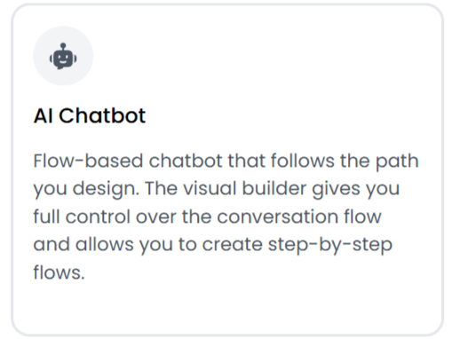
- Choose Web as your platform. 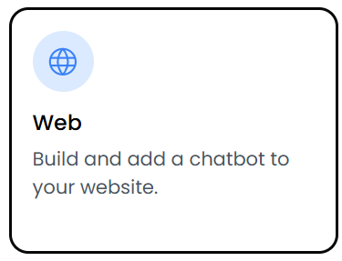
- Select Start from scratch to build manually. 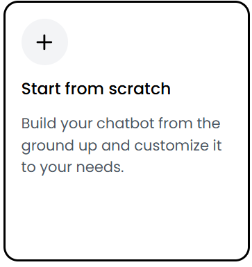
- Give your chatbot a name, for example: Paisley Games Bot. 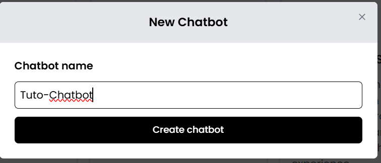
Once created, you’ll be redirected to your dashboard, where you can access the builder and all customization settings.
Step 2: Build the conversation flow
At the end of this section, the conversation flow should look like this:
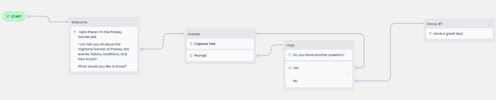In the Builder section, you’ll design the chatbot’s conversation visually using drag-and-drop blocks.
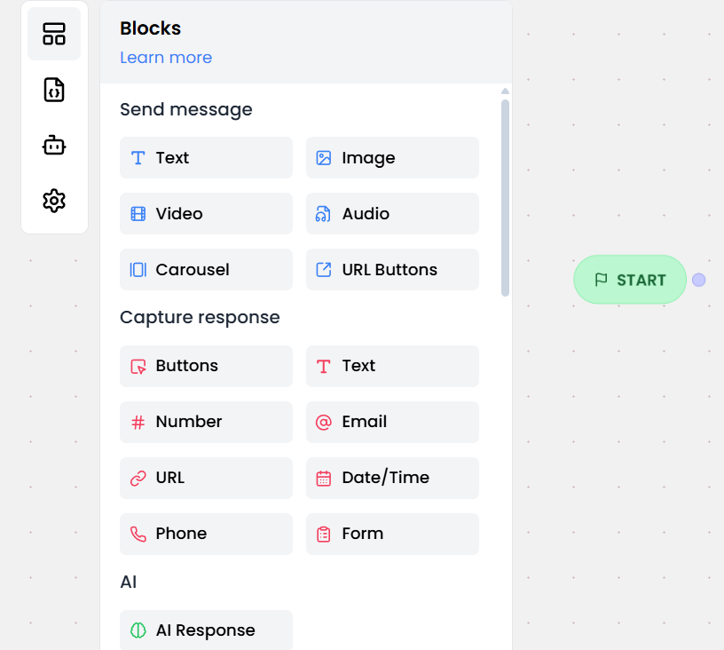Block 1: Welcome
Drag a text block to your workspace and link the Start button to the block.
Message example:
Hello there! I’m the Paisley Games Bot.
I can tell you all about the Highland Games of Paisley — the events, history, traditions, and how to join!
What would you like to know?

Block 2: Answer
This block captures the user’s question and uses AI to generate a reply.
- Add a Text capture response block to the workspace and link it to the previous block.
- Add a AI Response block under the Text capture response, so the AI can respond. 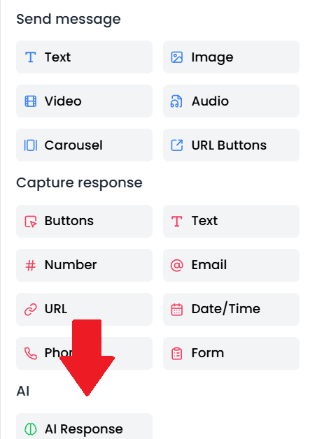
- Click on the AI Response block.
- In the settings panel, find the Response source field.
- Ensure Use Knowledge Base is selected. This lets Chatling use the information you uploaded (texts, PDFs, or website data).
- Use the following parameters for the other options: 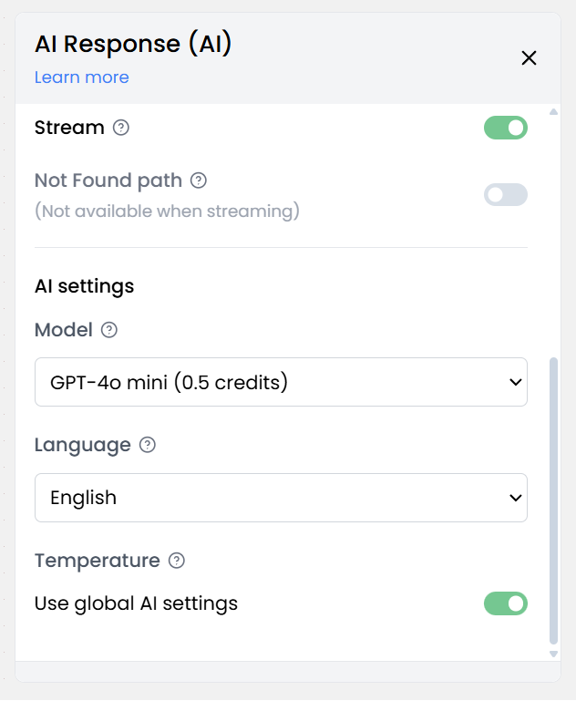
- Enter a short instruction to guide the AI.
Example Prompt:You are the Paisley Games Bot, a friendly expert on the fictional Highland Games of Paisley. Answer {questions} clearly and cheerfully, in a Scottish-inspired tone.

To make your chatbot respond properly, you need to configure the AI prompt and connect it with your Knowledge Base.
Your block should look like this:
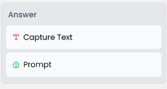Block 3: Loop
After the bot gives an answer, it asks the user if they’d like to continue. Add a Text and a Button in a new block and link it to the previous one.
Message example:
Do you have another question?
Link the different Button options to the corresponding blocks:
- Yes → goes back to the Answer block
- No → goes to the final message block
Block 4: End
Have a great day!
This is your chatbot’s closing message. Once reached, the conversation ends.
Step 3: Add knowledge or content
If you want your bot to answer real questions, go to the Knowledge Base section in Chatling and add some text or documents. For example, you could include:
- A description of the Highland Games of Paisley
- FAQs, event schedule, or contact info
- Links to your website or official sources
Step 4: Deploy your chatbot
Once your flow is ready and your AI responses are configured, it’s time to make your bot available to users. You can deploy it directly from your Chatling dashboard:
- Click the Preview button to test your chatbot in real time.
- If everything works as expected, click Publish to activate it.
- Go to Add to Website in the left menu to deploy the bot.
- Choose your preferred format 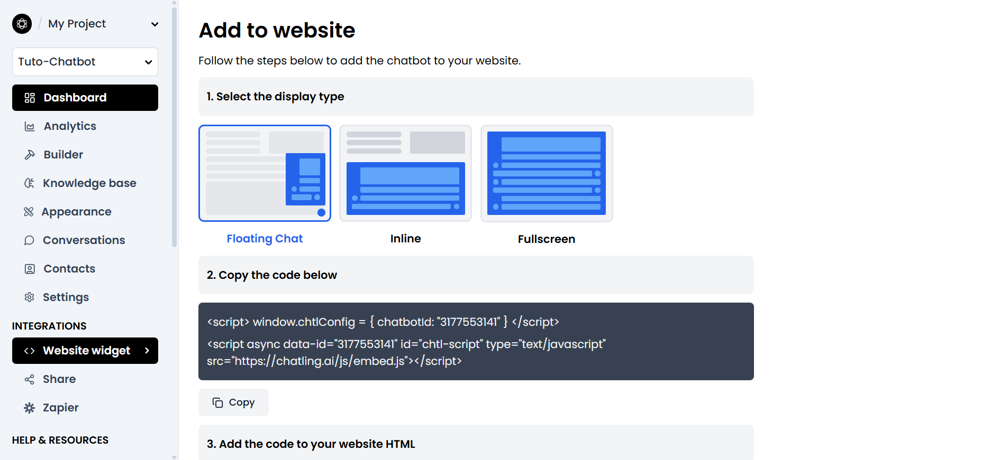
- Copy the provided HTML script and paste it into your website's code. 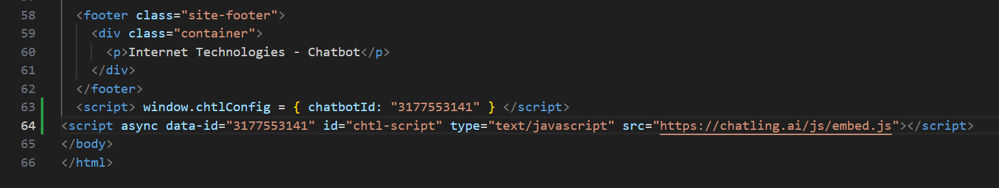
Once deployed, your Paisley Games Bot will be ready to chat with visitors and answer questions about the Highland Games of Paisley in real time!